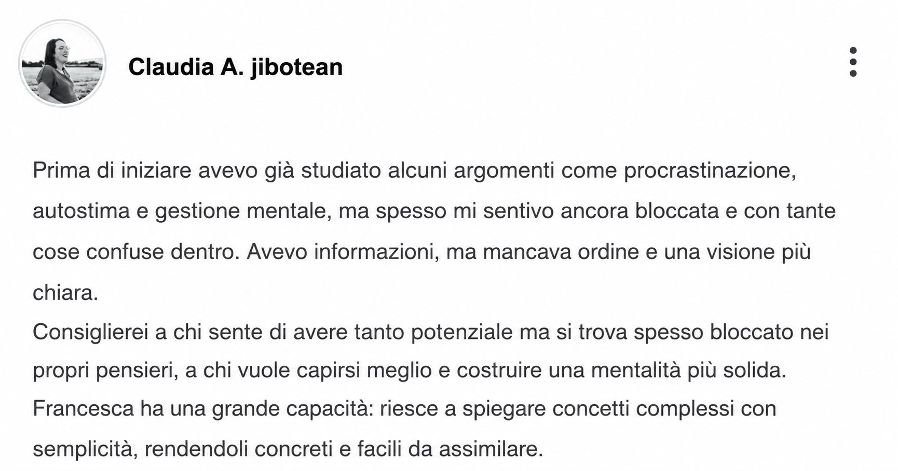
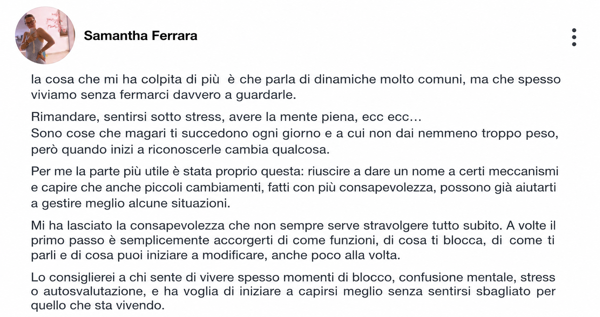
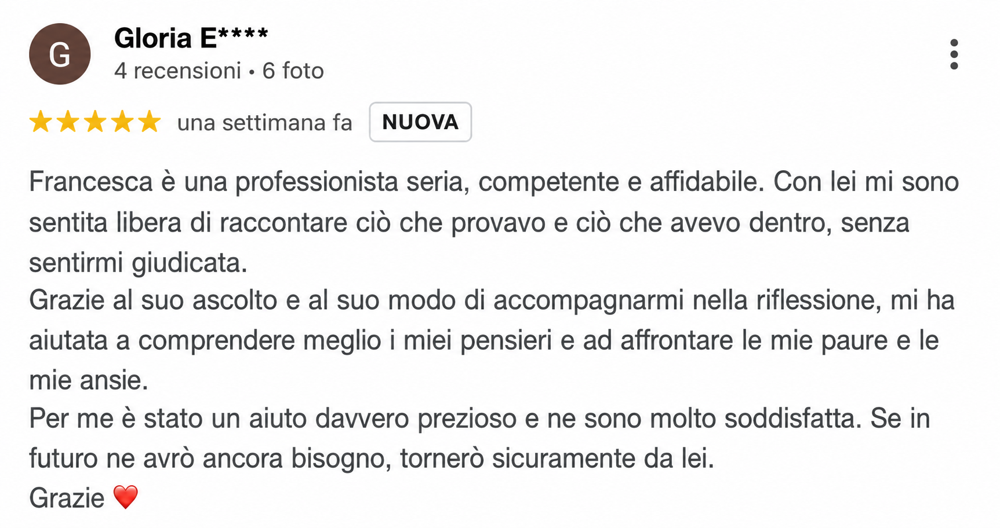

Aiuto i professionisti a passare dai dubbi all’azione, lavorando su perfezionismo, paura di sbagliare e timore del giudizio, attraverso percorsi individuali di mental coaching online.
Il percorso si rivolge a professionisti, autonomi e consulenti che si riconoscono in queste difficoltà.
Continui a prepararti, studiare o sistemare i dettagli, ma rimandi il momento di iniziare.
Vorresti esporti, proporti o condividere le tue idee, ma temi di non essere abbastanza.
Valuti tutte le possibilità e fai fatica a decidere.
Quando arrivano dubbi o difficoltà, rimandi le azioni che avevi deciso di fare.
Il mio percorso nasce da una forte passione per la crescita personale, lo studio della mente e i meccanismi che influenzano le nostre scelte.
Oggi metto queste competenze al servizio di chi vuole superare i propri blocchi mentali, gestire meglio il perfezionismo e trasformare gli obiettivi in azioni concrete.
Il mio approccio unisce consapevolezza, strumenti pratici ed empatia, lavorando sui propri schemi mentali, per costruire un cambiamento che non resti soltanto un'intenzione.
Un percorso individuale di mental coaching online per lavorare su un obiettivo concreto e su ciò che oggi ti impedisce di portarlo avanti.
Alcuni esempi concreti di situazioni e decisioni su cui possiamo concentrarci insieme:
Un approccio concreto e strutturato in tre passaggi per passare dalla riflessione all'azione:
Mettiamo a fuoco una situazione concreta che vuoi cambiare e cosa vorresti riuscire a fare.
Osserviamo i pensieri e le abitudini che ti portano a rimandare, cercare la perfezione o mettere in dubbio ogni scelta.
Individuiamo passi realistici e osserviamo cosa funziona e cosa va adattato.



Le risposte chiare ai dubbi più comuni prima di iniziare il tuo percorso.
Il mental coaching lavora su obiettivi e azioni concrete per fare chiarezza, superare i blocchi, gestire il perfezionismo e passare all'azione. Non è un percorso di terapia e non sostituisce in alcun modo un percorso psicologico o psicoterapeutico.
Sì, assolutamente. Tutti i percorsi si svolgono comodamente online tramite videochiamata (Google Meet o Zoom). Questo ti permette di seguire le sessioni ovunque tu sia, con la massima flessibilità di orari e la stessa efficacia, riservatezza e vicinanza di un incontro dal vivo.
Non esiste una durata standard uguale per tutti: il percorso è personalizzato al 100% in base alla tua situazione di partenza, ai tuoi bisogni e ai traguardi che vogliamo raggiungere insieme. Durante la prima chiacchierata conoscitiva valuteremo insieme i tuoi obiettivi e definiremo la durata e il piano di lavoro ideale per te.
Per garantirti la massima serenità nell'investire su di te, puoi scegliere liberamente tra il pagamento in soluzione unica oppure comodamente suddiviso a rate mensili, senza costi nascosti o complicazioni.
Hai altre domande o desideri capire se questo percorso è adatto a te?
PRENDIAMOCI UN CAFFÈ